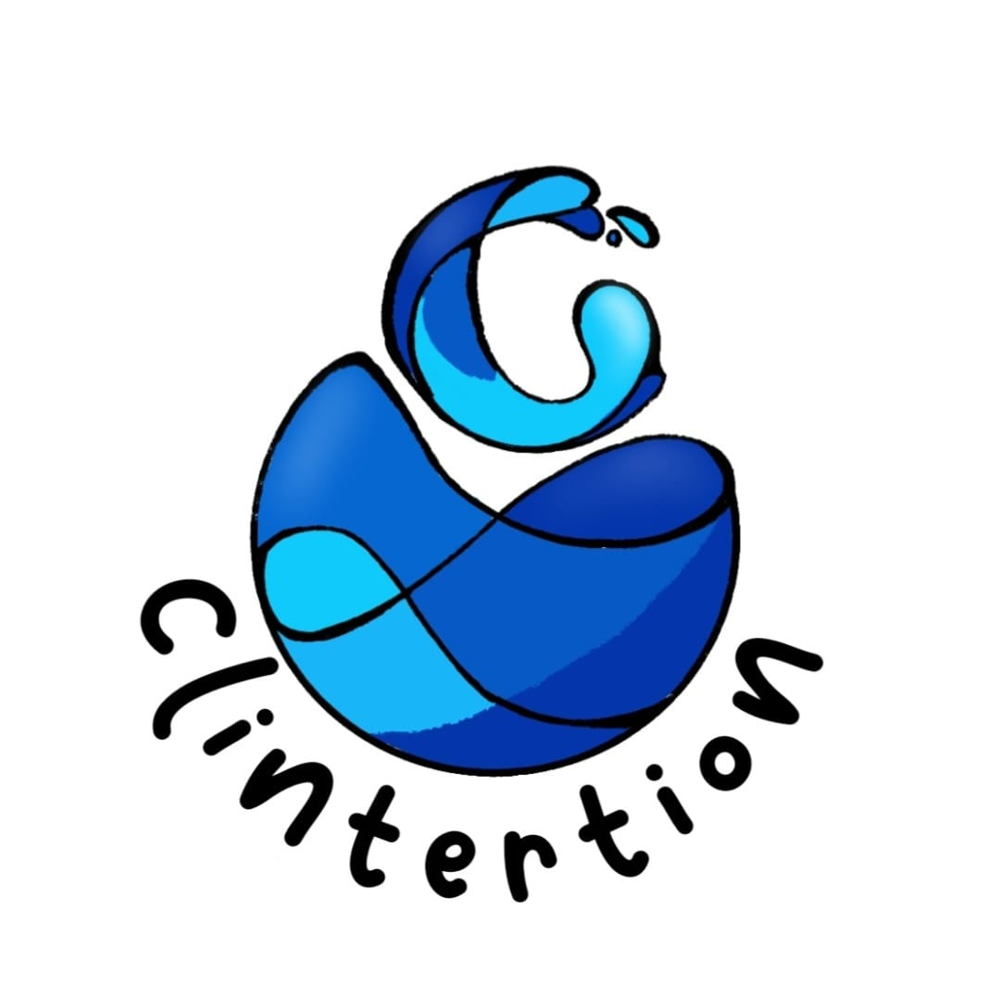

ABOUT U𝓢
Konnichiwa minna ! Hello all we are from 𝓬𝓵𝓲𝓷𝓽𝓮𝓻𝓽𝓲𝓸𝓷 𝓮'𝓺𝓾𝓲𝓹𝓮
ようこそ。!! welcome to 𝓬𝓵𝓲𝓷𝓽𝓮𝓻𝓽𝓲𝓸𝓷 team. also we have our logos

FILOSOFI LOGO :Didalam logo kami ada beberapa bentuk dan makna yang tentunya berbeda-beda, dimulai dari : Bentuk tetesan air (Drop Water) yang memaknai tetesan kehidupan, tanpa air maka tidak ada kehidupan yang juga mengandung perpaduan kesegaran dan kemurnian air bersih yang merupakan hasil harmoni alam antara kejernihan air dengan vegetasi tumbuhan (hutan).
Di dalam bentuk logo kami juga mencantumkan warna biru sebagai warna utamanya yang mempunyai makna yaitu warna yang termasuk tenang dan bersifat profesional. Efek lain warna biru adalah sering di anggap sebagai warna yang melambangkan kepercayaan trustfulness. Biru juga memiliki arti tenang dan mempengaruhi. Warna biru tua pada tetes air menggambarkan sifat kooperatif dan keteguhan hati. Warna biru muda pada logo mempunyai karakter cerah yang menggambarkan kegembiraan dan kebanggaan dalam melayani masyarakat serta sebagai gambaran air yang bersih.
Gambar utama pada logo kami yaitu tetesan air (Drop Water) kami juga menyambungkan huruf C pada logo tersebut yang mengandung nama kelompok kami yaitu Clintertion yang berarti gabungan dari nama sub tema yang kita ambil yaitu Clean Water and Sanitation.
Pada bagian bawah logo tetesan air (Drop Water) tercantum nama kelompok kami yaitu Clintertion dan fontnya berwarna hitam yang melambangkan kekuatan dan perlindungan. Yang berarti kami percaya bahwa setiap orang harus dan berhak memiliki akses ke air keran yang bersih dan dapat diminum. Cara yang kami lakukan untuk mewujudkan goals tersebut dimulai dengan produk kita yang akan mengkampanyekan pentingnya menjaga kebersihan sumber air dan dapat mengedukasi orang orang tentang cara menjaga kebersihan sumber air serta mengajak orang untuk membantu masyarakat yang kekurangan air bersih salah satu contohnya di Afrika yang memiliki krisis air bersih dengan berpartisipasi dengan organisasi.
ɪɴᴛʀᴏᴅᴜᴄᴇ ᴏᴜʀ ᴛᴇᴀᴍ :
naurah safa sabirah
keandrea sarah s